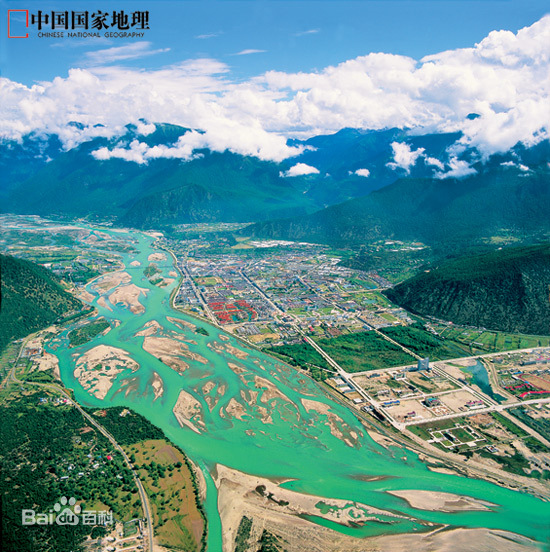

在本例中，图像会在段落中向左浮动，而段落中的文本会包围这幅图像。
林芝，是西藏自治区下辖地级市 [1] ，古称工布。位于西藏东南部，雅鲁藏布江中下游，其西部和西南部分别与拉萨市、山南市相连，西连那曲市嘉黎县、东接昌都市， 南部部分区域在藏南地区（印度占据）、缅甸接壤，被称为西藏江南，有世界上最深的峡谷——雅鲁藏布江大峡谷和世界第三深度的峡谷帕隆藏布大峡谷。 林芝风景秀丽，很多地带被誉为“西藏江南”，有林芝桃花节，有丰富多彩的南伊沟等，还有被誉为西藏西双版纳的墨脱县和察隅县。 林芝平均海拔3100米，幅员面积11.7万平方千米 [38] ，实际控制7.6万平方千米。根据第七次人口普查数据，截至2020年11月1日零时，林芝市常住人口为238936人。 [37] 2020年，林芝市实现地区生产总值191.34亿元，可比增长7.9% [35] 。2020年林芝市常住人口为238936人 [36] 。
林芝是藏文尼池（ nying khri ）或‘娘池’（nyang khri）一词音译而来，藏语意为“娘氏家庭的宝座或太阳的宝座”。解放后， 测绘队的同志根据当地的物产特点，把“尼池”写作“林芝”。 [4] 尼洋河边发现了一批新石器时代的人类遗骨和墓葬群，考古表明早在4000-5000年之前，林芝地区已有人类从事刀耕火种的农业， 过着相对定居的生活。出土文物中的网坠、箭头说明这里的人们不仅在古代的尼洋河、雅鲁藏布江水滨从事农业，也兼从事渔业。 位置境域林芝行政区林芝行政区(4张) 林芝市位于北纬26°52′-30°40′，东经92°09′-98°47′之间，东西长646.7千米，南北宽353.2千米，边境线长约1000千米， 幅员面积11.7万平方千米，实际控制7.6万平方千米。市中心所在地白玛岗街道海拔3000米，距离自治区首府拉萨市400余千米。[6] 林芝的东面及东北部与云南省、昌都市相连，北面是那曲市，西部和西南部分别与拉萨市、山南市相邻，南部又与藏南地区（印度占据）、 缅甸两国接壤，边境线长达1006.5千米。 [6] 东与昌都市和云南省迪庆藏族自治州毗邻，西与拉萨市和山南市交界，北与那曲市相连，南与缅甸国接壤。 [7] 气候喜马拉雅山脉和念青唐古拉山脉由西向东平行伸展，东部与横断山脉对接。东南低处正好面向印度洋开了一个大缺口， 顺江而上的印度洋暖流与北方寒流在念青唐古拉山脉东段一带会合驻留，造成了林芝的热带、亚热带、温带及寒带气候并存的多种气候带。 两大洋的暖流常年鱼贯而入，形成了林芝特殊的热带湿润和半湿润气候，年降雨量650毫米左右，年均温度8.7℃，年均日照2022.2小时，无霜期180天。 [7]地貌地貌地貌(5张)林芝海拔平均3000米左右，最低在雅鲁藏布江下游墨脱县巴昔卡，海拔155米， [8] 就高度来讲要低于西藏其他地区。是世界陆地垂直地貌落差最大的地带。喜马拉雅山脉和念青唐古拉山脉似两条巨龙由西向东地平行伸展，“南迦巴瓦”则正是龙脊上的白色雪峰，它海拔7782米，是南段喜马拉雅的最高雪峰，与横断山脉对接，形成了群山环绕的独特地形。 [7]